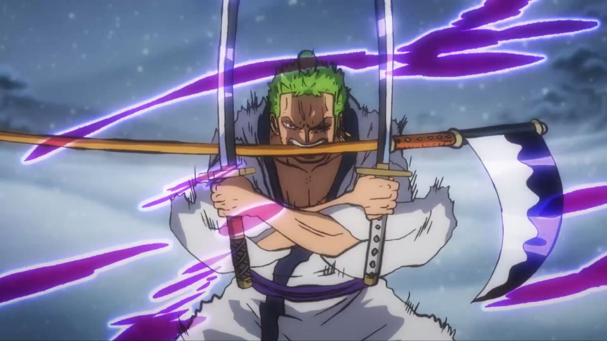

ZORO O CAÇADOR DE PIRATAS

Nome: Kanji: Recompensa: Alcunha:
Roronoa Zoro ロロノア・ゾロ ฿1,111,000,000 Caçador de piratas
Zoro é o espadachim habilidoso e leal dos Piratas do Chapéu de Palha em One Piece.
Determinado a se tornar o maior espadachim do mundo, Zoro é conhecido por sua seriedade,
força incrível e comprometimento com seu objetivo. Ele é um guerreiro feroz em batalha,
dominando a técnica de três espadas e demonstrando uma incrível resistência física. Zoro é
um membro valioso da tripulação de Luffy, contribuindo não apenas com suas habilidades de
combate, mas também com sua lealdade inabalável.